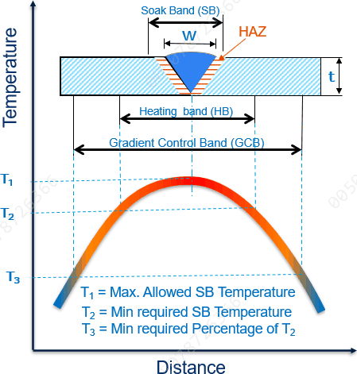
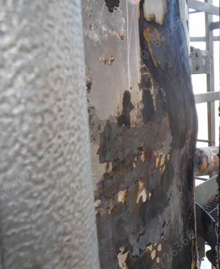
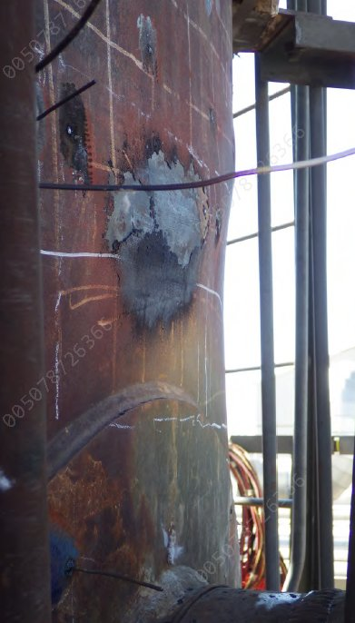
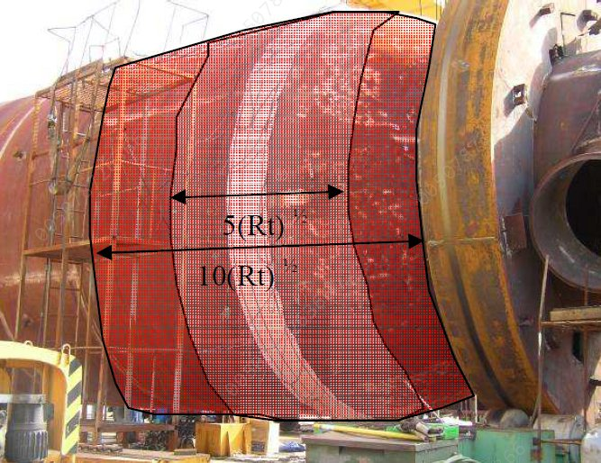

Local PWHT for Pressure Vessels and Piping
Local PWHT works only if the heated and insulated bands are wide enough, and the codes disagree on how wide that is. The bands explained, the code differences compared, and what goes wrong when they are misread.
Post-weld heat treatment (PWHT) is a controlled heat treatment carried out after welding to produce desirable changes in the properties of the weldment. Its main objectives are tempering, relaxation of residual stress, reduction of hardness and removal of hydrogen.
Weld residual stresses are internal stresses that exist without any external load. They arise because the heated weld area expands and contracts against the restraint of the surrounding material. Tensile residual stresses develop near the weld because the adjacent, colder base metal restrains it. These stresses make cracks more likely to start and grow and, depending on the process conditions and service environment, can increase the risk of stress corrosion cracking, fatigue cracking and ultimately brittle fracture.
Most codes recommend PWHT in a furnace, so that all weldments are heated uniformly and thermally induced stresses are avoided. They also allow local PWHT, where only a section of a much larger component, such as a pressure vessel, is heated, provided harmful temperature gradients are avoided.
Key regions in local PWHT
The three regions used in local PWHT are defined below and shown in Figure 1 [1]:
- Soak band (SB): the through-thickness volume of metal that must be heated to within the PWHT temperature range. As a minimum it includes the weld metal, the heat-affected zone (HAZ) and a portion of the base metal on each side of the weld.
- Heated band (HB): the surface area over which heat is applied to reach the required temperature in the soak band. It consists of the soak band on the outside surface plus enough adjacent base metal to control the temperature and achieve an acceptable temperature on the inside surface.
- Gradient control band (GCB): the surface area covered by insulation, a supplementary heat source, or both. It includes the soak band, the heated band and enough adjacent base metal to make sure harmful temperature gradients do not develop in the heated band.

Codes differ on local PWHT
The codes agree on the principles of local PWHT, but differ significantly on the sizes of the SB, HB and GCB and on holding time and temperature. This is clear when the PWHT requirements of the different sections of the ASME BPVC and the ASME B31 piping codes are compared.
If the HB and GCB are not properly calculated and applied, residual stresses may not be relieved effectively, or the heated part may distort. High residual stresses increase the probability of in-service cracking, especially in services subject to environmental cracking such as caustic stress corrosion cracking. In some cases finite element analysis (FEA) is needed because of the geometry of the part or a structural discontinuity near the weld. Improper local PWHT can even distort a vessel shell [2].


Service requirements
In some service environments, failure mechanisms such as alkaline stress corrosion cracking (ASCC) or hydrogen stress cracking (HSC) can be active. These can be driven by residual tensile stress, a hardened microstructure, or both. Exemption from PWHT based on thickness is therefore not relevant in these environments, and the construction codes generally do not consider the service environment. Hardness is sometimes used as an index of susceptibility to stress corrosion in certain environments.
When the purpose of PWHT is to meet specific hardness requirements, the minimum temperatures in the fabrication code may not be enough. For example, the recommended PWHT holding temperature for amine and caustic cracking service is 635 ± 15 °C (1175 ± 25 °F) [13], against 595 °C (1100 °F) in ASME BPVC Section VIII, Division 1 for P-No. 1 materials. Figure 3 shows how the various cracking mechanisms relate to each other.
Residual stresses
Welding deposits molten metal between two essentially cold parent metal faces. As the joint cools, the weld metal contracts but is restrained by the cold metal on each side, so the residual stress in the joint increases as the temperature falls. It can reach the yield strength of the weld metal.
To reduce this high residual stress, the component is reheated to a sufficiently high temperature. As the temperature rises the yield (proof) strength falls, allowing the material to deform and the residual stress to relax to an acceptable level. Figure 5 shows how the yield strength of three common materials changes with temperature.
The threshold residual stress levels for environmental cracking are often lower than those that matter for brittle fracture, so more detailed requirements may apply [4].
Residual stresses can be reduced by PWHT, but this option is not always available for corrosion-resistant alloys (CRAs). Other ways to control residual stress include alternating or specific welding directions to minimize distortion, and successive weld layers that temper the layers beneath. Groove designs that reduce weld metal volume, preheating, and assembly procedures with proper restraint all help reduce distortion [10].
Table 1 compares the local PWHT band requirements of different codes.
| Code | Soak band | Heated band | Gradient control band |
|---|---|---|---|
| ASME BPVC Section VIII, Div. 1 and 2 | t or 50 mm (2 in.), whichever is less, on each side of the weld | Gradient not harmful (no specific guidance) | Gradient not harmful (no specific guidance) |
| ASME BPVC Section I | t or 50 mm (2 in.), whichever is less, on each side of the weld* | Temperature controlled to prevent harmful gradients (no specific guidance)* | Temperature controlled to prevent harmful gradients (no specific guidance)* |
| ASME B31P | 3t* | No specific guidance* | No specific guidance* |
| WRC 452 and AWS D10.10 | As ASME BPVC Section VIII | SB + 2√ | HB + 2√ |
| PD 5500 and AS 1210 (as quoted in WRC 452) | Weld + HAZ | 5√ | 10√ |
* ASME BPVC Section I and ASME B31P have separate appendixes for P-No. 15E materials such as Grade 91; see Table 2.
Impact on notch toughness
In some cases PWHT can cause reheat cracking or reduce notch toughness [7]. The effect of PWHT on the notch toughness of weld metal varies widely with material composition, strength level, flux, heat input, and the PWHT temperature and holding time.
Since the 2014 edition of ASME B31.3, PWHT is no longer mandatory for any wall thickness, provided multi-pass welding is used and a minimum preheat of 95 °C (200 °F) is applied for thicknesses over 25 mm (1 in.).
Grade 91 and other creep-strength enhanced ferritic steels
9Cr-1Mo-V steel, Grade 91, is a low-carbon martensitic steel whose enhanced creep and creep-rupture properties come from its composition and heat treatment. Steels of this kind are designated creep-strength enhanced ferritic (CSEF) steels in ASME Section IX. Developed for service at temperatures where design stresses are governed by creep strength, Grade 91 has poor notch toughness and is susceptible to stress corrosion cracking in the as-welded condition. Its metallurgy also requires careful control of welding parameters to minimize hydrogen-induced cracking. Grade 91 is only one of several CSEF steels promoted for service in the creep range [7].
CSEF steels, including Grade 91, have special PWHT requirements, covered separately in EPRI publications, ASME BPVC Section I Mandatory Appendix VIII and ASME B31P Nonmandatory Appendix B. Table 2 compares the band sizes required by different codes.
| Code | Soak band | Heated band | Gradient control band |
|---|---|---|---|
| ASME BPVC Section VIII, Div. 1† | t or 50 mm (2 in.), whichever is less, on each side of the weld | Gradient not harmful (no specific guidance) | Gradient not harmful (no specific guidance) |
| ASME BPVC Section I, Mandatory Appendix VIII | 1.5t each side of weld for NPS ≤ 4 in.; 6t each side of weld for NPS ≤ 4 in.; 10t on each side of weld for NPS > 8 in. | SB + on each side | HB + 4t on each side |
| ASME B31P | 1.5t each side of weld for NPS ≤ 4 in.; 6t each side of weld for NPS ≤ 4 in.; 10t on each side of weld for NPS > 8 in. | No specific guidance | No specific guidance |
| WRC 452 and AWS D10.10 | As ASME BPVC Section VIII | SB + 2√ | HB + 2√ |
| PD 5500 and AS 1210† | Weld + HAZ | 5√ | 10√ |
† No special band sizes for P-No. 15E materials.
Filler metal composition matters
Besides the special band sizes in ASME BPVC Section I and ASME B31P for P-No. 15E materials, the codes place requirements on the filler metal composition. Note (3) of Table UCS-56-11 in ASME BPVC Section VIII, Division 1 limits the PWHT holding temperature according to the Ni + Mn content of the filler metal:
- Ni + Mn below 1.0%: maximum PWHT temperature 790 °C.
- Ni + Mn from 1.0% to 1.2%: maximum PWHT temperature 780 °C.
- Ni + Mn above 1.2%: PWHT temperature at least 10 °C below the lower critical transformation temperature.
Similar requirements are given in the notes to Table PW-39-5 of ASME BPVC Section I.
Paragraph 131.6 of ASME B31.1 requires P-No. 15E materials to be cooled below the approximate martensite finish temperature (Mf) before PWHT. The approximate Mf is 190 °C for filler metal with Ni + Mn ≤ 1.2% and 95 °C for filler metal with Ni + Mn above 1.2%, which shows the large effect of filler composition.
Ni + Mn lowers the lower critical temperature Ac1 (Figure 7). To keep the PWHT temperature below Ac1, the Ni + Mn content is typically limited, as a safeguard against austenite re-forming during PWHT [14].
Worked example
Consider a steam pipe at a boiler outlet in Grade 91 material, NPS 20 with 30 mm wall thickness. Table 3 and Figure 8 give the SB, HB and GCB required by different codes.
| Code | SB, mm | HB, mm | GCB, mm |
|---|---|---|---|
| AWS D10.10 / WRC 452 | 90 (1) | 418 | 746 |
| ASME BPVC Section VIII, Div. 1 | 120 (1) | Not specified | Not specified |
| ASME B31P, Appendix B | 300 | 350 | 590 |
| ASME BPVC Section I, Appendix VIII | 600 | 840 | 1080 |
The example shows how widely the requirements of the different codes differ for this material.
Case history
A 90 mm thick P11 (1.25Cr-0.5Mo) vessel received local PWHT of its closure weld during fabrication. The insulation applied covered little more than the soak band, while the gradient control band should have extended much further, as required by PD 5500 (BS 5500) as quoted in WRC 452. This resulted from misinterpreting the local PWHT requirements, made easier by the fact that the vessel's design code, ASME BPVC Section VIII, Division 1, does not specify the HB or GCB size. The weld cracked after a few years of operation because of the improper PWHT [15].

Conclusion
Local PWHT is a highly effective stress-relief technique when applied correctly, but its success depends on following the code-specific requirements and the metallurgical principles precisely. Because the criteria differ between standards, each application needs a careful evaluation to set the treatment parameters. In critical applications, FEA can help optimize the PWHT to prevent failures and ensure long-term integrity.
References
- ASME B31P-2023, Standard Heat Treatments for Piping.
- E2G, Establishing Recommended Guidance for Local Post Weld Heat Treatment Configurations Based on Thermal-Mechanical Finite Element Analysis.
- WRC Bulletin 452, Recommended Practices for Local Heating of Welds in Pressure Vessels.
- AWS D10.10, Recommended Practices for Local Heating of Welds in Piping and Tubing.
- ASME BPVC Section VIII, Division 1.
- ASME BPVC Section I.
- ASME STP-PT-033, Degradation of Notch Toughness by Post Weld Heat Treatment (PWHT).
- ASME PCC-2, Repair of Pressure Equipment and Piping.
- National Board Inspection Code (NBIC).
- NACE TR1F192, Use of Corrosion-Resistant Alloys in Oilfield Environments.
- WRC Bulletin 481, The Effect of Post Weld Heat Treatment and Notch Toughness on Welded Joints and on Normalized Base Metal Properties of A516 Steel.
- ASME BPVC Section II, Part D (metric).
- NACE SP0472-2020, Methods and Controls to Prevent In-Service Environmental Cracking of Carbon Steel Weldments in Corrosive Petroleum Refining Environments.
- API TR 938-B, Use of 9Cr-1Mo-V (Grade 91) Steel in the Oil Refining Industry.
- D.M. Firth, Q. Rowson, A. Saunders-Tack, C. Thomas, K. Lichti and J. Soltis, Cracking of a Closing Weld in a Secondary Autothermal Reformer in a Mega Methanol Plant, Quest Integrity NZL Limited.
This article is for general engineering guidance. Apply it with the current edition of the referenced codes and standards and the judgement of a qualified engineer.